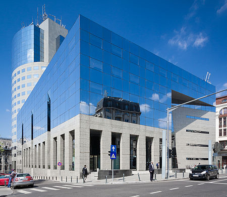

|
Economie
 Bucureștiul este cel mai mare centru economic al României. În anul 2010 capitala a realizat aproximativ 22,7% din Produsul Intern Brut al României și împreună cu județul Ilfov 25,3% conform datelor instituțiilor de specialitate, iar PIB/locuitor cu 240% mai ridicat decat media națională. În București se regăsește cea mai mare parte dintre ramurile economice specifice României excluzând agricultura. Începând cu domeniul serviciilor și terminând cu construcțiile. Întreprinderile constructoare de mașini (utilaj greu, utilaj siderurgic, petrolier, mașini și utilaje agricole, locomotive, vagoane, avioane și elicoptere, autobuze). Industrie electrotehnică, electronică, mecanică fină, optică. Întreprinderi chimice, de materiale de construcție, de prelucrare a lemnului. Bucureștiul este un important nod feroviar, rutier și aerian. |